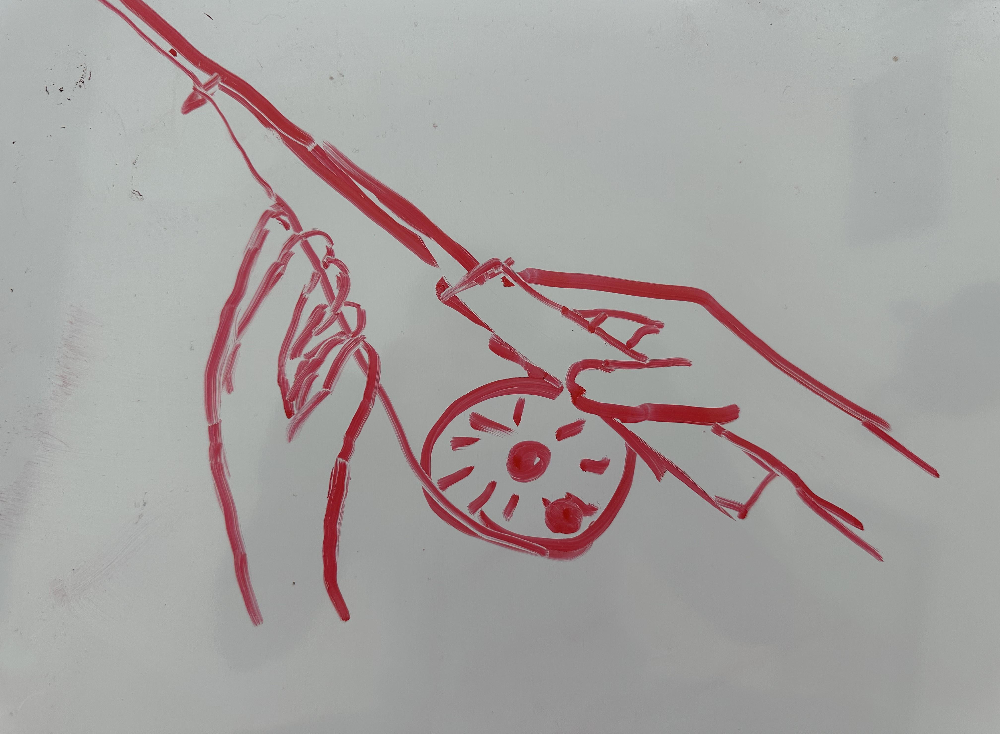
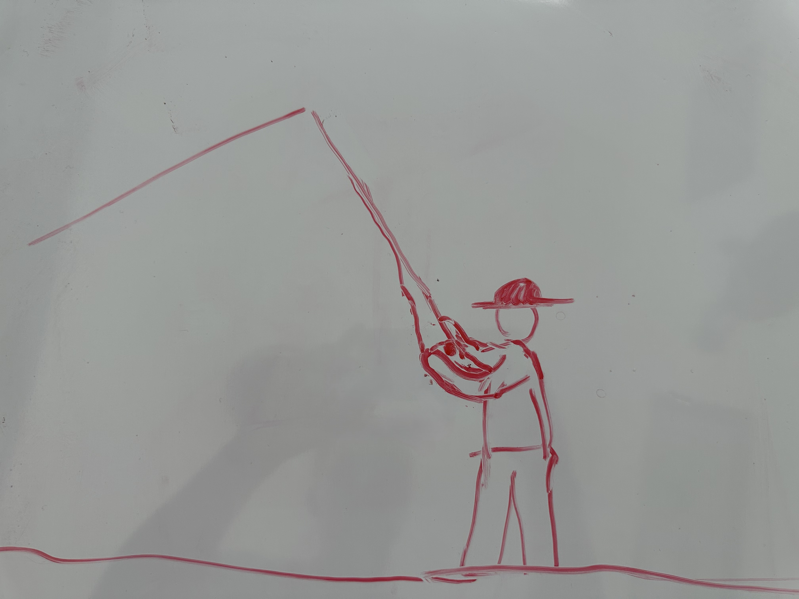
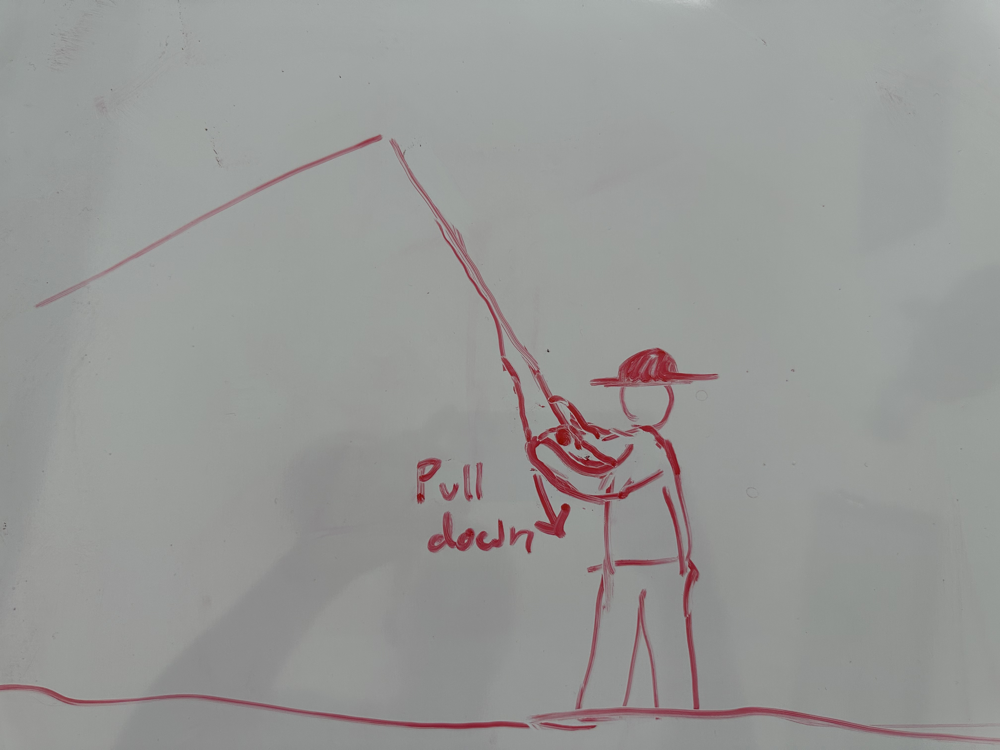
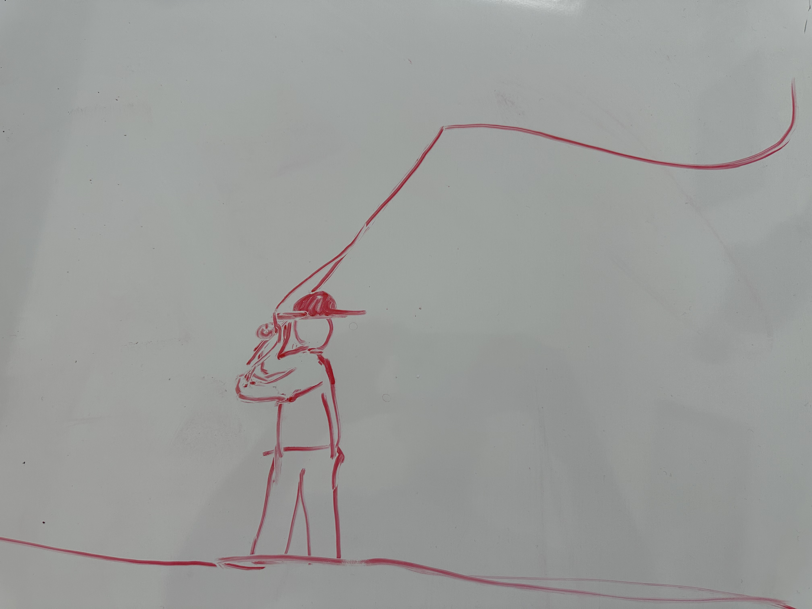
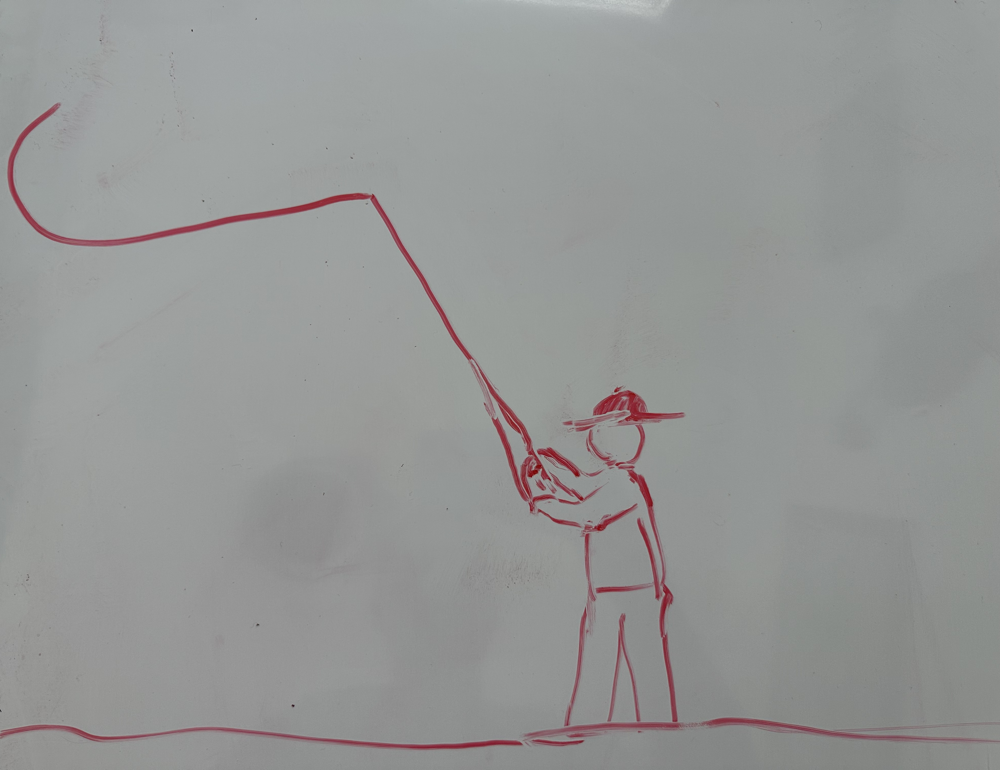
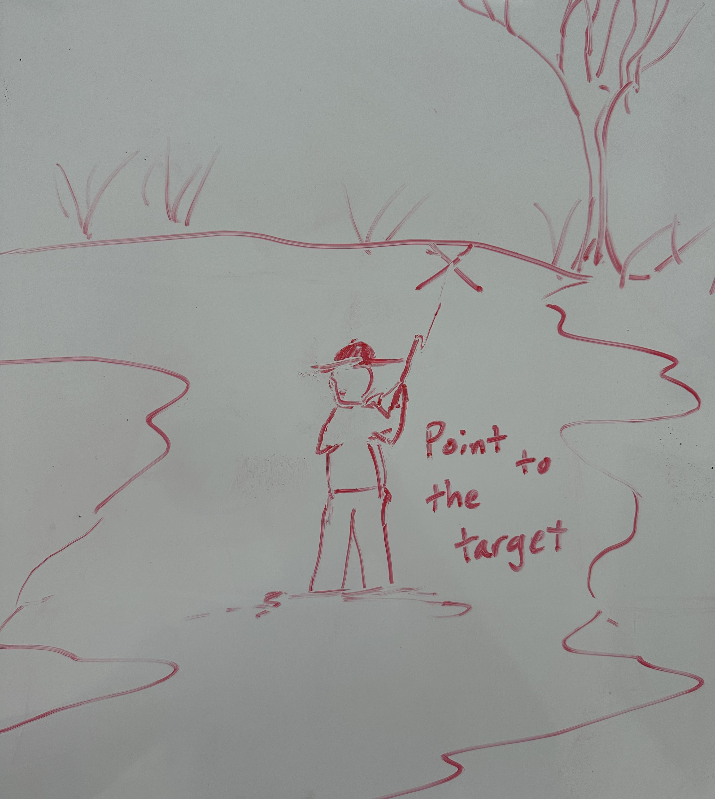

Secure a firm hold on your rod with your strong hand. With your other hand, hold the taut line in the rod.

The wrist of your strong hand should be steady and unmoving. Your strong hand holding the rod should be at 10 o'clock relative to your head (representing the 12 o'clock position on a clock).

STEP TWO: BACK-CAST
To initiate a back cast, give a short and abrupt pull on the line with your weak hand, sending the line backwards.

While keeping your strong hand stable and wrist secure, bring your arm to 12 o'clock in line with your head.

Let the line glide through your weak hand without letting it escape. Stop your arm abruptly and let the line unfurl into an inverted "hook" shape.
STEP THREE: FORWARD-CAST
When the line resembles the hook shape, it is ready to be cast forward.
Give another short, abrupt pull on the line with your weak hand, while simultaneously bringing the rod forward to the 10 o'clock position.
The speed of the stroke depends on the length of line being cast and may require practice to master.
Let the line unfurl forward until it forms an inverted "hook" shape.

If you're trying to cast more line, repeat Step Two. If you're ready to lay the line down, move to Step Four.
STEP FOUR: LAYING THE LINE
Plan where you want to cast and position your body accordingly during the forward cast.
After stopping your forward motion, let the remaining slack carried by the line unfurl naturally.
Point the rod tip to where you want the line to go.

If done correctly, the line will fall straight onto the water. Too much slack and it will squiggle, disturbing the water. Too little, and it will not reach the target.
STEP FIVE: PRACTICE AND PATIENCE
This technique is tough to master on your first try. Focus on feeling the line and gaining control over it.
Keep practicing with the feel of the line, and make efforts to get as much line moving as possible. You'll be catching fish in no time!
Here is an extensive tutorial to provide instruction and practice techniques.